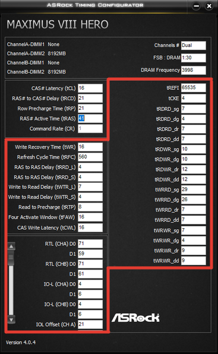
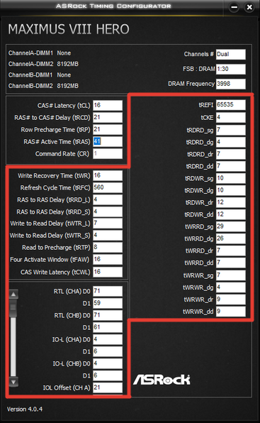
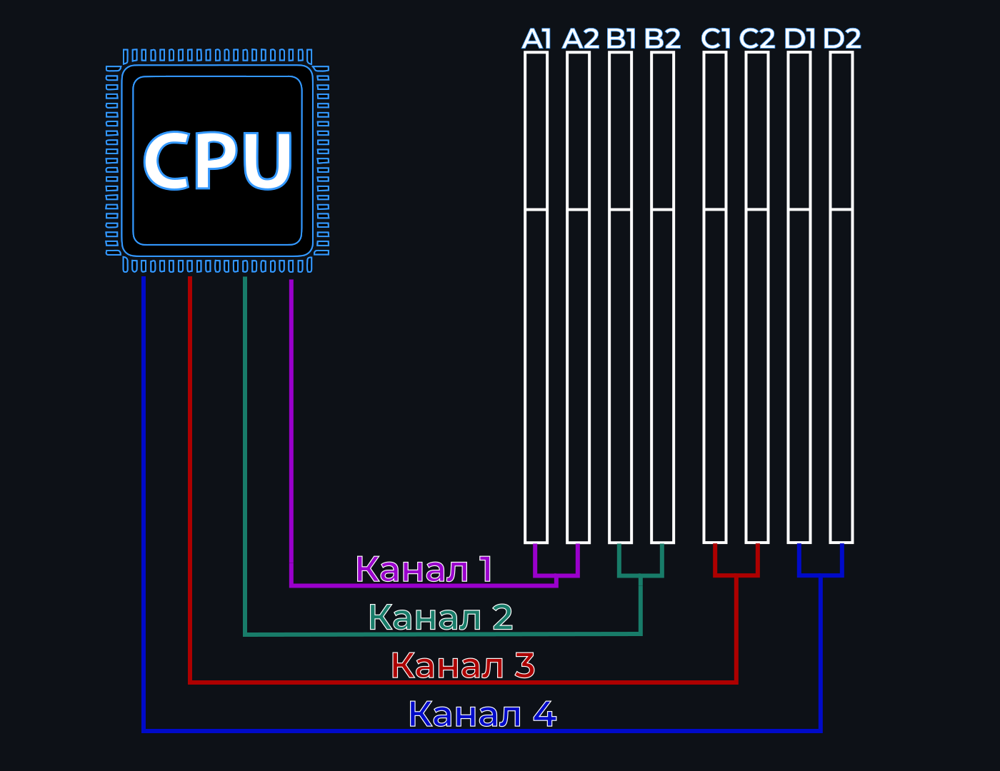
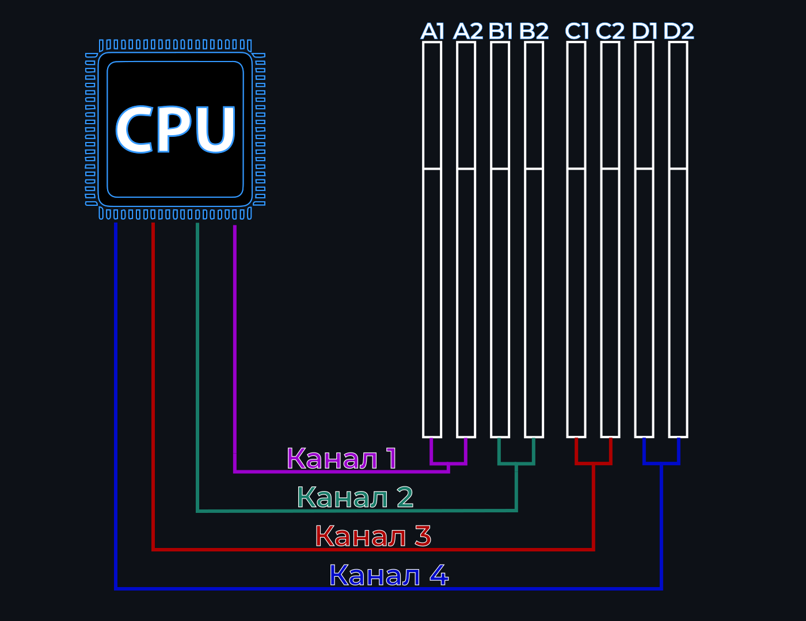

Оперативная память для ПК имеет форм фактор DIMM. Такая память продаётся в виде прямоугольных модулей, вставляемых напрямую в соответствующие разъёмы материнской платы. Выглядят разъёмы на материнских платах следующим образом:
Оперативная память для ПК имеет форм фактор DIMM. Такая память продаётся в виде прямоугольных модулей, вставляемых напрямую в соответствующие разъёмы материнской платы. Выглядят разъёмы на материнских платах следующим образом:
Типы памяти
 На данный момент типы оперативной памяти имеют следующий письменный вид: DDR, DDR2, DDR3, DDR4, DDR5, где DDR – самый старший вид.
На данный момент типы оперативной памяти имеют следующий письменный вид: DDR, DDR2, DDR3, DDR4, DDR5, где DDR – самый старший вид.
При выборе оперативной памяти для ПК всегда нужно проверять, соответствует ли тип самой оперативной памяти поддерживаемому материнской платой типу.
Ранее выпускались материнские платы с поддержкой нескольких типов, поэтому появление таковых на рынке не исключено. Поколения оперативной памяти отличаются физически, а значит и разъёмы материнской платы изменяются в зависимости от поддерживаемого типа. Подробнее

Объём оперативной памяти
 Для офисной работы хватит 4 ГБ, но, если вы работаете с огромным количеством данных одновременно, лучше докупить ещё один такой модуль.
Для офисной работы хватит 4 ГБ, но, если вы работаете с огромным количеством данных одновременно, лучше докупить ещё один такой модуль.
Для игр минимальный объём – 8 ГБ, но лучше всего – 16 ГБ. Оценить разницу в производительности этих величин при прочих равных очень легко по тестам, доступным в сети.
Для профессиональных задач минимум – 32 ГБ, и 64 если вы собираетесь работать с достаточно сложными проектами.
Эффективная частота
 Пример эффективной частоты оперативной памяти выглядит следующим образом:
3200 MHZ (мегагерц) MT/S (миллионов передач данных в секунду) = 3 200 000 000 тактов/сек.
Реальная частота памяти — это число электрических импульсов или же тактов в секунду, а эффективная частота — это реальная частота, умноженная на число бит, передаваемых за один рабочий такт. Поэтому измерять эффективную частоту в мегагерцах не совсем корректно, и производители оперативной памяти делают это в качестве допущения, для удобства покупателя.
Подробнее
Пример эффективной частоты оперативной памяти выглядит следующим образом:
3200 MHZ (мегагерц) MT/S (миллионов передач данных в секунду) = 3 200 000 000 тактов/сек.
Реальная частота памяти — это число электрических импульсов или же тактов в секунду, а эффективная частота — это реальная частота, умноженная на число бит, передаваемых за один рабочий такт. Поэтому измерять эффективную частоту в мегагерцах не совсем корректно, и производители оперативной памяти делают это в качестве допущения, для удобства покупателя.
Подробнее
Реальная частота записывается аналогично с эффективной и обычно не указывается производителями на упаковке с памятью или же работниками интернет-магазинов.
Эта частота представляет собой по сути уменьшенную в некоторое количество раз (для оперативной памяти 2 раза) эффективную частоту.
вы можете наблюдать в программах, предоставляющих данные о комплектующих. (CPU-Z, AIDA64 и другие).
По частоте в физическом смысле оперативная память отличается количеством электрических сигналов, которые посылаются другими компонентами компьютера в течение одного цикла тактов.Отличить память по данному признаку можно, воспользовавшись схемой:
.svg) Подробнее
Подробнее
В условиях равных таймингов (в наносекундах):
 Частота памяти влияет на производительность в разных задачах и с разными видеокартой и процессором по-разному.
Частота памяти влияет на производительность в разных задачах и с разными видеокартой и процессором по-разному.
Производительность в программах для 3D моделирования от частоты зависит крайне несущественно.
Производительность в играх от частоты зависит по-разному. При высоком показателе FPS (более низких настройках графики) и, соответственно, большей нагрузке на процессор более высокая частота будет давать прирост производительности от 10 – 15 %. Однако если процессор загружен меньше, то и влияние частоты уменьшается до уровня погрешности.
Производительность в программах для видеомонтажа от частоты зависит в пределах до 5 % прироста производительности.
В условиях равных частот:
 Тайминги влияют на производительность в разных задачах и с разными видеокартой и процессором по-разному.
Тайминги влияют на производительность в разных задачах и с разными видеокартой и процессором по-разному.
Производительность в программах для 3D моделирования от таймингов зависит крайне несущественно.
Производительность в играх от таймингов зависит по-разному. При высоком показателе FPS (более низких настройках графики) и, соответственно, большей нагрузке на процессор меньшие тайминги будут давать прирост производительности до 12 %. Однако, если процессор загружен меньше, то и влияние таймингов уменьшается до 3 – 4 %.
! - Важно заметить, что такой прирост производительности вы можете получить только при уменьшении суб-таймингов вместе с основными - !
Производительность в программах для видеомонтажа от частоты оперативной памяти зависит в пределах до 4 % прироста производительности.
Из этих данных можно сделать следующие выводы:
Если вы нацелились на разгон памяти для игр, то он будет иметь смысл только если вы желаете иметь средний показатель FPS более 75 кадров, соответственно, для того чтобы это имело смысл вы должны иметь монитор, имеющий частоту обновления экрана более или равную 75 герц. Соответственно, вы должны покупать память, максимальное количество таймингов которой масштабируемо.
Если вы покупаете память для профессиональных задач, то разгонять её имеет смысл только если вы занимаетесь сложными проектами, не связанными с 3D моделированием.
Для офисных задач разгон не имеет смысла. По типу памяти в физическом смысле оперативная память отличается количеством электрических сигналов, которые посылаются другими компонентами компьютера в течение одного цикла тактов. Подробнее
XMP и DOCP профили
 Настройки XMP (Xtreme Memory Profile) нужны для того чтобы увеличить эффективность работы памяти без особого вмешательства пользователя.
Настройки XMP (Xtreme Memory Profile) нужны для того чтобы увеличить эффективность работы памяти без особого вмешательства пользователя.
XMP является опцией заводского “разгона” оперативной памяти, однако нередко бывает так, что параметры XMP не являются самыми эффективными и для получения максимальной производительности пользователю приходится разгонять память самому.
“Неполный” разгон может быть очень выгоден производителю, поскольку затраты на добавление на плату чипа минимальны.
C течением времени пользователь более вероятно захочет поменять память ввиду того, что будет считать её недостаточно эффективной для своих запросов, однако к тому моменту она ни разу не работала “на максимум”. Всё вышеперечисленное актуально и для DOCP (Direct Overclock Profile). На планках памяти устанавливается микросхема с информацией. Эта информация – набор настроек частоты, напряжения и таймингов памяти, которые пользователь может активировать двумя нажатиями. Таких наборов информации может быть несколько. Подробнее
В BIOS кнопки для включения этих профилей могут выглядеть следующим образом:
XMP профиль в BIOS материнской платы ASRoc
Тайминги
 Тайминги – задержки между осуществлениями функциональных операций оперативной памяти, выражаемые в последовательности значений в тактах, разделённых тире с приставкой CL или, реже, одним значением с приставкой CL.
Тайминги – задержки между осуществлениями функциональных операций оперативной памяти, выражаемые в последовательности значений в тактах, разделённых тире с приставкой CL или, реже, одним значением с приставкой CL.
Например, CL14-15-19-33 или CL14.
В первом случае эти значения обозначают четыре основных задержки (tCL, tRCD, tRP, tRAS в том же порядке), а во втором – задержку tCL как самую важную.
Тайминги напрямую зависят от частоты. Из-за этой зависимости память с разной частотой и разными таймингами может иметь одинаковую или почти одинаковую задержку. Например, тайминг 15 на реальной частоте в 1600 MHZ равен 9,375 наносекундам, а тайминг 18 на реальной частоте в 2000 MHZ равен 9 наносекундам.
Важно обращать на это внимание при покупке, так как может показаться что память на более высокой частоте имеет большие задержки из-за больших числовых значений таймингов, однако это может быть неверно.
Каждый модуль памяти состоит из чипов памяти – чёрных квадратов, выступающих из корпуса модуля. Чипы памяти имеют структуру в виде ячеек для хранения заряда. Таким образом выглядит упрощённая схема цикла работы памяти:
1) Подача команды на выбор строки RAS и выбор столбца CAS, передача данных из буфера в процессор.
2) Подача команды на подзарядку Precharge для сохранения заряда в памяти.

3) Выбор новой строки RAS и дальнейшее повторение цикла.
Для лучшего понимания схем нужно вспомнить, что каждое из положений ячеек – слабый (0) или сильный (1) их заряд. Когда командами RAS и CAS заряд перетекает в буфер, его закономерно становится меньше в самих ячейках памяти. Отсюда и возникает надобность в команде Precharge – она требуется для избежания потери информации (заряда).
А так можно представить работу памяти на временной шкале в виде тактов:
Напряжение и масштабируемость
 Ещё один фактор, влияющий на работу оперативной памяти – напряжение. Повышение напряжения в BIOS позволит вам более эффективно разогнать память.
Ещё один фактор, влияющий на работу оперативной памяти – напряжение. Повышение напряжения в BIOS позволит вам более эффективно разогнать память.
В XMP профилях напряжение повышается автоматически. Масштабируемость – зависимость какой-либо из задержек памяти от напряжения.
Реже всего масштабируются первые три тайминга (tCL, tRCD, tRP), чаще – первый и третий, ещё чаще – первый. Масштабируемость и другие параметры оперативной памяти зависит от чипа и, следовательно, от модели.
От напряжения зависит скорость зарядки всех элементов, работа которых зависит от заряда (строк RAS во время Precharge, время зарядки ячейки буфера (tCL) и т.д).
То, как выражается зависимость, а также перевод значения тайминга в наносекунды вы можете увидеть на схеме (буква n – число тактов, полученное из значения реальной частоты):
.svg) Помимо основных таймингов, обычно указываемых производителями, существуют также суб-тайминги (второстепенные тайминги). Таким образом они отображаются в ПО:

Подробнее
Помимо основных таймингов, обычно указываемых производителями, существуют также суб-тайминги (второстепенные тайминги). Таким образом они отображаются в ПО:

Подробнее
Факторы, влияющие на характеристики памяти:
 Существует пять факторов, влияющих на характеристики оперативной памяти – три фактора технологии производства и сырья и два фактора влияния остальных комплектующих ПК.
Существует пять факторов, влияющих на характеристики оперативной памяти – три фактора технологии производства и сырья и два фактора влияния остальных комплектующих ПК.
Первые три фактора это качество печатной платы, используемые чипы памяти и ранг памяти. Факторы комплектующих – зависимость от материнской платы и процессора.
Факторы технологии производства и сырья
Для покупателя оценка печатной платы доступна только в одном виде – оценкой платы человеком, который уже владеет ей, поскольку производители не указывают ни характеристик платы, ни каких-либо названий. Такая оценка наверняка будет малополезна, поэтому можно сказать что над этим фактором покупатель не властен.
Чипы памяти, наоборот, указываются производителями, но из-за того, что процесс производства крайне сложен.
Даже проверенные чипы памяти типа SAMSUNG B-DIE, очень сильно ценимые на рынке в более дешёвых моделях могут быть изготовлены в худшем варианте и не иметь тех же характеристик, что тот же чип имеет на более дорогой памяти.
Способов достоверно определить плохая версия одного и того же чипа стоит в вашей оперативной памяти не существует (также потому что производители могут с течением времени менять чипы памяти, используемые на тех же моделях).
На текущий момент на рынке рангов памяти может быть от одного до двух.
Двухранговая память даёт существенный прирост в играх при прочих равных, однако одноранговая память лучше разгоняется и, как правило, стоит дешевле и в разгоне достигает тех же или даже больших результатов чем двухранговая память.
Определить ранг памяти можно почти достоверно при помощи QVL списка или при наличии указания ранга у некоторых производителей, или по объёму оперативной памяти – память второго ранга встречается почти всегда в 16-ти гигабайтном и более исполнении, а первого – в объёме менее 16-ти гигабайт. Ранг памяти – то, каким образом чипы памяти спроектированы на печатной плате и ширина шины этих чипов. Ширина шины – количество бит информации, передаваемой в такт. Одноранговая память – память с шириной шины в 64 бит, которая состоит из чётного количество чипов с разной собственной шириной шины. При увеличении ранга памяти по одному растёт количество 64-ёх битных областей. Подробнее
Факторы комплектующих ПК
 Оперативная память зависит от материнской платы. Поддержка разгона, наличие памяти в списке QVL, количество каналов и топология платы в разных степенях влияют на работоспособность памяти.
Оперативная память зависит от материнской платы. Поддержка разгона, наличие памяти в списке QVL, количество каналов и топология платы в разных степенях влияют на работоспособность памяти.
Поддержка разгона указывается в характеристиках материнской платы на сайтах производителей. Наличие такой поддержки позволяет изменять частоту и тайминги памяти вручную. В противном случае вы максимум сможете редактировать только тайминги.
Даже если вы не рассматриваете возможность разгона вы должны знать, что платы такой поддержки имеют жёсткое ограничение по максимальной частоте оперативной памяти. Эти ограничения также прописаны в характеристиках материнских плат.
В процессе производства материнской платы производители тестируют различные модули оперативной памяти на определённых частотах.
Результаты тестов (будет память работать при определённых параметрах на этой плате или нет) производители также выкладывают на сайтах со своей продукцией, обычно в отдельный раздел QVL.
Также в QVL списках указывается ранг памяти в формате 1Rx8 (первый ранг, 8 чипов памяти) / 2Rx16 (второй ранг, 16 чипов памяти) или SS / DS (single side/double side). Во втором случае указывают по сути количество сторон, на которых расположены чипы памяти. Подробнее
 Также QVL список можно найти на сайтах с самой оперативной памятью. Однако, если рассматриваемого вами модуля в QVL списке платы нет, это не значит что он не будет работать, просто производитель этого не гарантирует.
Также QVL список можно найти на сайтах с самой оперативной памятью. Однако, если рассматриваемого вами модуля в QVL списке платы нет, это не значит что он не будет работать, просто производитель этого не гарантирует.
Также, редко, но были прецеденты, когда протестированная память на заявленной частоте не работала, следовательно, 100%-ной точности у таких списков быть не может. Ещё стоит помнить о том, что разные версии ПО BIOS могут влиять как на разгон, так и на совместимость.
Некоторые платы имеют несколько списков QVL под разные поколения процессоров. Обязательно проверяйте соответствие вашего процессора списку QVL!
Количество каналов и топология материнской платы – крайне важные факторы влияния на оперативную память. В соответствии с спецификацией, вы должны будете установить память на плату определённым образом.
Важно понимать, что количество каналов определяется количеством парных разъёмов под оперативную память. Большее количество задействованных каналов всегда означает большую производительность. На то, как установить модули памяти для максимального быстродействия (задействования максимального количества каналов) и влияют топология и количество каналов. Подробнее
 Существует три вида топологии у материнских плат – Цепь Дейзи (Daisy Chain), Т-топология (T Topology), и топология для двух разъёмов.
Существует три вида топологии у материнских плат – Цепь Дейзи (Daisy Chain), Т-топология (T Topology), и топология для двух разъёмов.
Память, подключённая к разъёмам с топологией Дейзи, лучше работает (лучше разгоняется и более вероятно запускаются заявленные производителем частоты), если у каждого канала задействовано по одному разъёму, а у плат с Т-топологией лучшая производительность достигается при подключении всех разъёмов.
Когда разъёмов для оперативной памяти на плате только два – модули разгоняются лучше и более вероятно совместимы чем на платах с другой топологией.
Определить вид топологии платы можно также с помощью QVL списка – если память с максимальной частотой тестировалась в 4-ёх модульном исполнении, то плата скорее всего имеет Т-топологию, а если в 2-ух модульном, то Цепь Дейзи если количество разъёмов на плате превышает 2.
Очень важно понимать, что топология оказывает влияние на работоспособность оперативной памяти только при частотах свыше 3800 MHZ.
На данной схеме вы можете увидеть принципиальное различие топологий:
 А это – схема подключения каналов к процессору (при Т-топологии):

Подробнее
А это – схема подключения каналов к процессору (при Т-топологии):

Подробнее
 Помимо материнской платы, память зависит от процессора, а если точнее – от контроллера памяти.
Помимо материнской платы, память зависит от процессора, а если точнее – от контроллера памяти.
В характеристиках процессора указывается максимальная поддерживаемая частота памяти, однако у производителей AMD максимальная частота, на которой память действительно могла работать нормально в среднем была меньше на 2%.
Владельцы процессоров Intel ограничены лишь материнской платой.
Алгоритм выбора памяти
Если материнская плата не поддерживает разгон оперативной памяти
1. Удостоверьтесь что выбранная материнская плата поддерживает выбранный тип оперативной памяти.
2. Выберете желаемый объём модулей.
3. Убедитесь, что эффективная частота выбранной вами памяти не превышает ограниченную материнской платой частоту (это также зависит от установленного процессора и также указывается в технических характеристиках материнской платы).
Даже если вы включите XMP-профиль, частота в котором превышает ограничение, то материнская плата либо не будет работать, либо понизит частоту до приемлемой автоматически.
4. Выберете память с минимальными таймингами, однако не стоит переплачивать за разницу в один или два такта.
5. Если разъёмов на плате четыре – берите 2 модуля памяти в наборе, каждый из которых имеет половину объёма.
Если у вашей платы только два разъёма под память, а вы хотели бы иметь общий объём, например, в 16 ГБ, то смело берите один модуль на половину этого объёма при условии, что в скором времени вы сможете докупить себе второй такой же модуль.
6. Отдавайте предпочтение двухранговой памяти.
7. Не придавайте значение чипам памяти.
8. Проверьте вашу память по QVL списку материнской платы или самой памяти.
9. Посмотрите в сети тесты вашей конкретной оперативной памяти. Так вы сможете убедиться, что для ваших задач она точно подойдёт.
Если материнская плата поддерживает разгон оперативной памяти, но вы не собираетесь разгонять
1. Удостоверьтесь что выбранная материнская плата поддерживает выбранный тип оперативной памяти.
2. Выберете желаемый объём модулей.
3. Убедитесь, что эффективная частота выбранной вами памяти не превышает ограниченную процессором частоту. Предпочтительно, если эффективная частота равна или превышает 3200 MHZ.
4. Выберете память с минимальными таймингами, однако не стоит переплачивать за разницу в один или два такта.
5. Если разъёмов на плате четыре и частота вашей памяти не превышает 3800 MHZ – берите память в 2 модулях в наборе, каждый из которых имеет половину объёма
Если разъёмов на плате четыре и частота вашей памяти превышает или равна 3800 MHZ, а вид топологии вашей платы - Цепь Дейзи – берите память в 2 модулях в наборе, каждый из которых имеет половину объёма.
Если разъёмов на плате четыре и частота вашей памяти превышает или равна 3800 MHZ, а вид топологии вашей платы – Т-топология – берите память в 4 модулях в наборе, каждый из которых имеет четверть объёма.
Если разъёмов на плате восемь и частота вашей памяти превышает или равна 3800 MHZ, а вид топологии вашей платы - Цепь Дейзи – берите память в 4 модулях в наборе, каждый из которых имеет четверть объёма.
Если разъёмов на плате восемь и частота вашей памяти превышает или равна 3800 MHZ, а вид топологии вашей платы – Т-топология – берите память в 8 модулях в наборе, каждый из которых имеет одну восьмую объёма.
Если у вашей платы только два разъёма под память, а вы хотели бы иметь общий объём, например, в 16 ГБ, то смело берите один модуль на половину этого объёма при условии, что в скором времени вы сможете докупить себе второй такой же модуль.
6. Отдавайте предпочтение двухранговой памяти.
7. Не придавайте значение чипам памяти.
8. Проверьте вашу память по QVL списку материнской платы или самой памяти.
9. Посмотрите в сети тесты вашей конкретной оперативной памяти. Так вы сможете убедиться, что для ваших задач она точно подойдёт.
Если материнская плата поддерживает разгон оперативной памяти, и вы собираетесь разгонять
1. Удостоверьтесь что выбранная материнская плата поддерживает выбранный тип оперативной памяти.
2. Выберете желаемый объём модулей.
3. Убедитесь, что эффективная частота выбранной вами памяти не превышает ограниченную процессором частоту. Предпочтительно, если эффективная частота равна 3000-3200 MHZ. Учитывайте, что разгон более чем на 1000 MHZ очень сложен.
4. Выберете память с минимальными таймингами, однако не стоит переплачивать за разницу в один такт.
5. Важно понимать, что даже высококачественные и дорогие модули в комплекте из 4-ёх штук могут разгоняться не одинаково – а если любой из модулей работает на меньшей частоте чем остальные, остальные должные работать на его частоте. Поэтому лучше всего отдавать предпочтение материнским платам с топологией Цепь Дейзи.
Если разъёмов на плате четыре и частота вашей памяти не превышает 3800 MHZ – берите память в 2 модулях в наборе, каждый из которых имеет половину объёма.
Если разъёмов на плате четыре и частота вашей памяти превышает или равна 3800 MHZ, а вид топологии вашей платы - Цепь Дейзи – берите память в 2 модулях в наборе, каждый из которых имеет половину объёма.
Если разъёмов на плате четыре и частота вашей памяти превышает или равна 3800 MHZ, а вид топологии вашей платы – Т-топология – берите память в 4 модулях в наборе, каждый из которых имеет четверть объёма.
Если разъёмов на плате восемь и частота вашей памяти превышает или равна 3800 MHZ, а вид топологии вашей платы - Цепь Дейзи – берите память в 4 модулях в наборе, каждый из которых имеет четверть объёма.
Если разъёмов на плате восемь и частота вашей памяти превышает или равна 3800 MHZ, а вид топологии вашей платы – Т-топология – берите память в 8 модулях в наборе, каждый из которых имеет одну восьмую объёма.
Если у вашей платы только два разъёма под память, а вы хотели бы иметь общий объём, например, в 16 ГБ, то смело берите один модуль на половину этого объёма при условии, что в скором времени вы сможете докупить себе второй такой же модуль.
Важно понимать, что даже высококачественные и дорогие модули в комплекте из 4-ёх штук могут разгоняться не одинаково – а если любой из модулей работает на меньшей частоте чем остальные, остальные должные работать на его частоте.
Поэтому лучше всего отдавать предпочтение материнским платам с топологией Цепь Дейзи.
6. Выбирайте память на чипах, о разгонном потенциале которых вы можете найти наибольшую информацию.
7. Отдавайте предпочтение одноранговой памяти, если ваш запрос на объём не превышает 16 ГБ. В противном случае, покупайте двухранговую память. Учтите, что разогнать двухранговую память вы сможете до значений, меньших на приблизительно 300 MHZ.
8. Если вы не хотите зависимости жизнеспособности вашей памяти от разгона с напряжением выше или равном 1.35 вольт, покупайте память, имеющую радиатор (блок охлаждения поверх печатной платы).
9. Проверьте вашу память по QVL списку материнской платы или самой памяти.
10. Посмотрите в сети тесты вашей конкретной оперативной памяти. Так вы сможете убедиться, что для ваших задач она точно подойдёт.